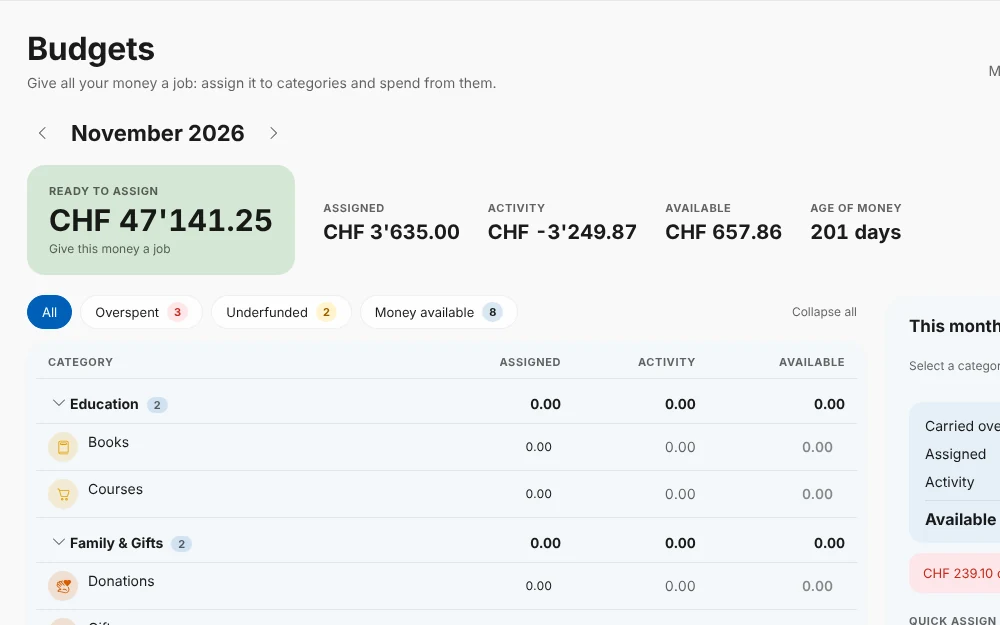
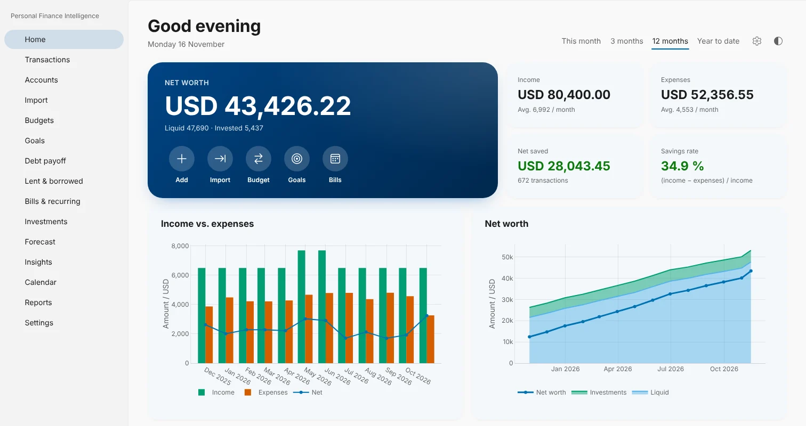
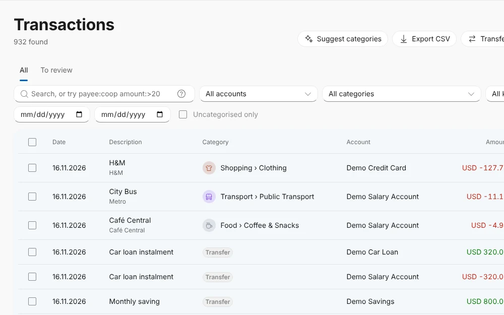
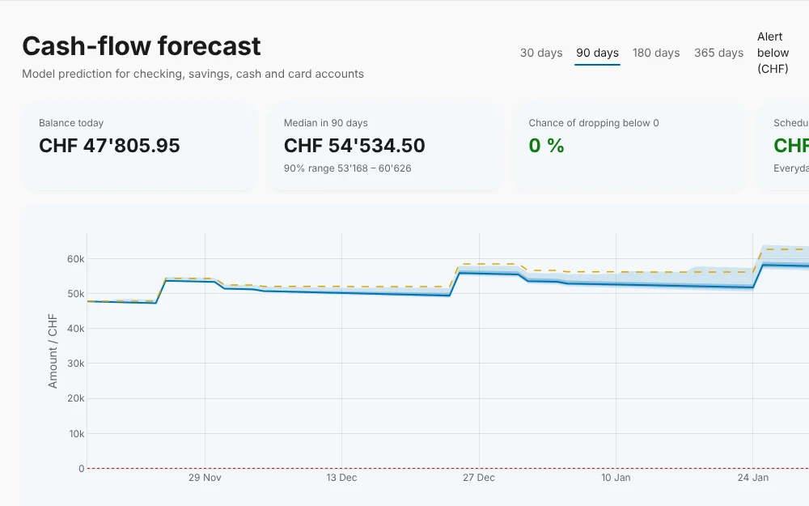
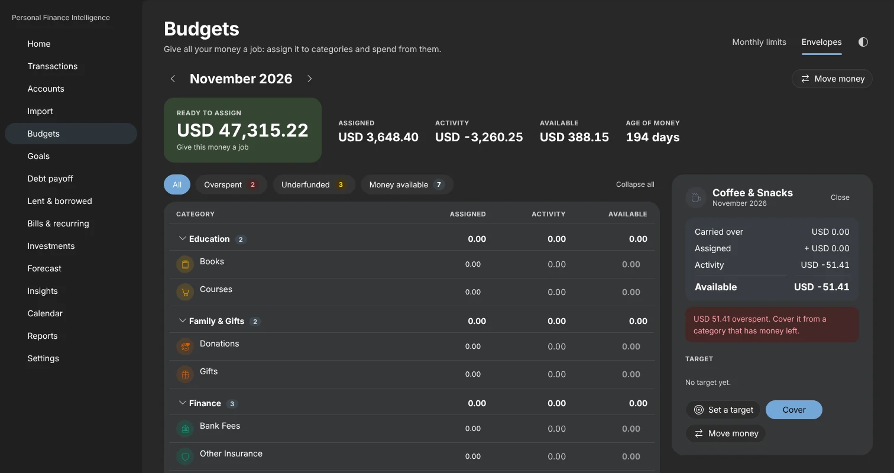
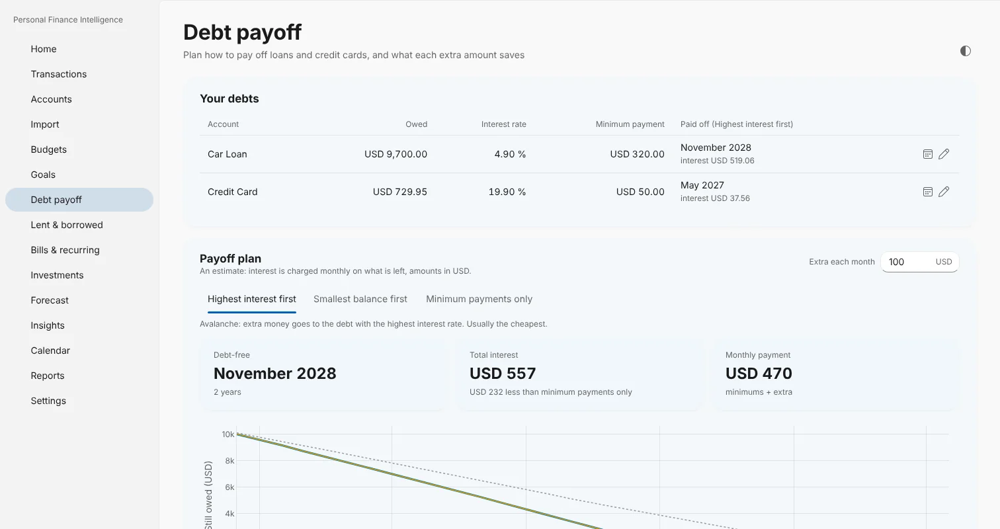
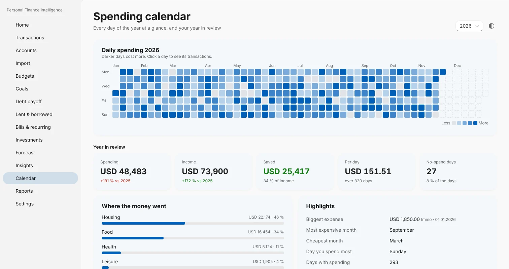
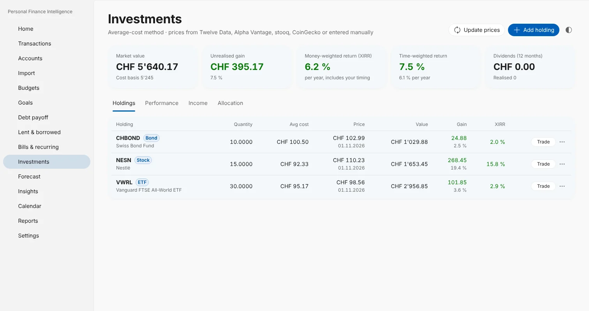

Budget with envelopes
Assign your money to categories, see what is overspent or underfunded at a glance and fund your targets in one click.
Personal Finance Intelligence 0.7.1
The free budget app for Windows and Android. Plan every franc, import your bank statements and see where your money goes, without an account and without a cloud server.
Free and open source · Windows 10 and 11 · Android 8+ · See what's included


Assign your money to categories, see what is overspent or underfunded at a glance and fund your targets in one click.

CSV, OFX/QFX, QIF and CAMT.053. PFI learns your categories and shows possible duplicates before anything is saved.

Cash-flow forecast from your own history, a debt payoff planner, investments with returns, and bills that never surprise you.
Install PFI on your PC, then add your phone if you like. Both are free.
Windows 10 (2004 or later) and Windows 11, 64-bit. Updates arrive automatically from the Microsoft Store.

Prefer an installer? Download PFI-Setup (.exe)
Android 8 or later. Keeps the same accounts, transactions and budgets as your PC through your own OneDrive.

Scan with your phone's camera, then open PFI-0.7.1.apk.
OneDrive\Apps\PFI Sync and a passphrase.No subscription, no ads, no in-app purchases. Every feature is for everyone.
PFI
Free forever
DownloadPrivate by design
Support PFI
PFI is made by one developer. If it helps you, a small donation keeps it going. It unlocks nothing; the app stays complete for everyone.
Support PFI ♥



Yes. PFI is free on the Microsoft Store and open source under the GNU AGPL-3.0 license. There are no ads, no subscription and no in-app purchases.
No. You download your statement from your bank's website and import the file (CSV, OFX/QFX, QIF or CAMT.053). PFI never asks for your bank login. How to import a CAMT.053 file.
In a single SQLite file in your Windows user folder, and on your phone if you use the Android app. Nothing is sent to a PFI server; backups go to a folder you choose and can be protected with a password.
Yes. The free PFI app for Android keeps the same accounts, transactions and budgets as the PC. Sync goes through a folder in your own OneDrive and is encrypted with your passphrase before it leaves the device. See Connect your phone in three steps.
Yes. Settings › Move to another PC creates one file with everything; open it on the new PC with "Restore from a backup".
Windows 10 version 2004 or later and Windows 11, on 64-bit x64 PCs.